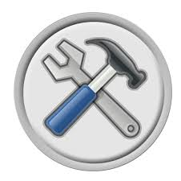
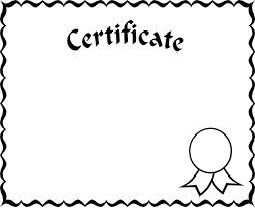
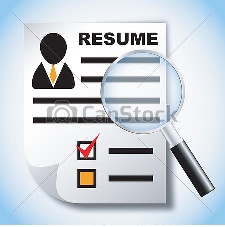

Contact Information:
2542 Fox Creek Drive
Jacksonville, FL 32221
(Home)
904.378.5138
(Cell)
904.923.0854
Email:
nc2jax@hotmail.com
Michael D. Coleman
Sr. Technical Support Analyst
My Portfolio
My Profile

Latest Works

Certifications

Resume